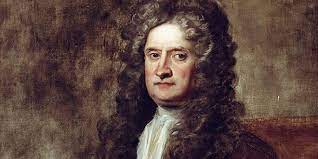

Sejarah

Sejarah Singkat Matematika
Matematika adalah salah satu disiplin ilmu tertua dalam sejarah manusia yang berkembang seiring dengan kebutuhan manusia untuk memahami, mengukur, dan mengelola dunia di sekitarnya. Berikut adalah perjalanan singkat dari sejarah matematika:
Awal Perkembangan Matematika
Matematika pertama kali muncul sebagai respons terhadap kebutuhan praktis seperti penghitungan, pengukuran, dan pengelolaan waktu. Bukti pertama penggunaan matematika ditemukan pada 35.000 tahun lalu di Afrika, berupa tulang Ishango yang menunjukkan tanda-tanda penghitungan.
Peradaban Kuno
1. Mesir Kuno
Bangsa Mesir menggunakan matematika untuk membangun piramida, sistem irigasi, dan kalender. Mereka telah mengenal operasi penjumlahan, pengurangan, perkalian, dan pembagian, meski dengan metode sederhana.
2. Mesopotamia
Bangsa Sumeria dan Babilonia mengembangkan sistem bilangan berbasis 60. Mereka membuat kemajuan dalam geometri dan astronomi, serta memecahkan persamaan kuadrat.
3. India dan Tiongkok
Di India, angka nol diperkenalkan sebagai konsep matematis yang signifikan. Matematika juga digunakan dalam astronomi dan ilmu pengukuran waktu. Di Tiongkok, "Sembilan Bab tentang Seni Matematika" adalah teks penting yang mencakup metode-metode geometri praktis.
Matematika Yunani
Pada zaman Yunani kuno (abad ke-6 hingga ke-4 SM), matematika mulai berkembang menjadi ilmu abstrak. Matematikawan seperti Thales, Pythagoras, dan Euclid menekankan pendekatan deduktif, menghasilkan karya seperti Elements karya Euclid, yang menjadi fondasi geometri.
Matematika di Dunia Islam
Pada abad ke-8 hingga ke-14 M, matematikawan Muslim seperti Al-Khwarizmi (bapak aljabar) dan Omar Khayyam berkontribusi besar dalam aljabar, trigonometri, dan pengembangan angka desimal. Karya mereka diterjemahkan ke bahasa Latin, yang membawa pengetahuan matematika ke Eropa.
Renaisans dan Revolusi Ilmiah
Di Eropa pada abad ke-16 hingga ke-17, matematika berkembang pesat dengan penemuan kalkulus oleh Isaac Newton dan Gottfried Wilhelm Leibniz. Pada periode ini, matematika digunakan untuk memahami hukum-hukum alam dalam fisika, astronomi, dan teknik.
Era Modern
Pada abad ke-19 dan ke-20, matematika berkembang menjadi cabang-cabang baru seperti teori himpunan, statistik, dan matematika terapan. Matematikawan seperti Carl Friedrich Gauss, Henri Poincaré, dan Alan Turing mengembangkan teori-teori yang mendasari sains modern dan teknologi komputer.
Matematika Saat Ini
Saat ini, matematika adalah dasar dari berbagai bidang seperti teknologi informasi, kecerdasan buatan, ekonomi, dan bioteknologi. Dengan kemajuan komputer, penelitian matematika semakin maju, memungkinkan pemecahan masalah kompleks dalam skala yang sebelumnya tidak terbayangkan.
Tokoh
.jpeg)
Tokoh-Tokoh Terkenal dalam Sejarah Matematika
Matematika tidak hanya berkembang melalui kebutuhan praktis, tetapi juga melalui kontribusi besar para pemikir luar biasa yang melahirkan teori, konsep, dan metode yang menjadi dasar ilmu pengetahuan hingga kini. Berikut adalah beberapa tokoh matematika yang paling berpengaruh dalam sejarah:
1. Thales dari Miletus (624–546 SM)
Thales adalah salah satu matematikawan pertama yang diketahui dalam sejarah. Ia dikenal sebagai "bapak geometri" karena berhasil menerapkan logika deduktif dalam memecahkan masalah geometris. Salah satu teorema terkenal yang dikaitkan dengannya adalah Teorema Thales, yang berhubungan dengan lingkaran dan segitiga.
2. Pythagoras (570–495 SM)
Pythagoras adalah filsuf dan matematikawan Yunani yang dikenal karena Teorema Pythagoras, yang menghubungkan panjang sisi-sisi segitiga siku-siku. Ia juga mendirikan sekolah yang memadukan matematika, musik, dan filsafat.
3. Euclid (325–265 SM)
Euclid, sering disebut "Bapak Geometri," adalah penulis Elements, sebuah buku yang menjadi rujukan utama dalam geometri selama lebih dari 2.000 tahun. Ia memperkenalkan konsep sistem aksioma yang menjadi dasar metode matematika modern.
4. Archimedes (287–212 SM)
Archimedes adalah salah satu matematikawan terbesar Yunani kuno. Ia mengembangkan metode untuk menghitung volume benda tidak beraturan dan menemukan banyak prinsip dalam mekanika dan hidrostatika. Rumus untuk menghitung luas lingkaran dan volume bola juga dikembangkan olehnya.
5. Al-Khwarizmi (780–850 M)
Matematikawan Persia ini dikenal sebagai "bapak aljabar." Karyanya dalam aljabar memberikan nama bagi cabang matematika tersebut. Melalui bukunya Al-Kitab al-Mukhtasar fi Hisab al-Jabr wal-Muqabala, ia memperkenalkan sistem bilangan Hindu-Arab yang kita gunakan hingga kini.
6. Fibonacci (1170–1240 M)
Leonardo Fibonacci adalah matematikawan Italia yang memperkenalkan sistem bilangan Hindu-Arab ke Eropa melalui bukunya Liber Abaci. Ia juga dikenal karena urutan Fibonacci, yang muncul dalam berbagai fenomena alam dan matematika.
7. René Descartes (1596–1650)
Descartes adalah matematikawan dan filsuf Prancis yang dikenal sebagai bapak geometri analitik. Ia menggabungkan aljabar dan geometri melalui sistem koordinat Cartesian, yang menjadi dasar geometri modern.
8. Isaac Newton (1643–1727) dan Gottfried Wilhelm Leibniz (1646–1716)
Kedua tokoh ini secara independen mengembangkan kalkulus diferensial dan integral, yang menjadi alat penting dalam fisika dan matematika terapan. Newton menggunakan kalkulus untuk menjelaskan hukum gerak dan gravitasi, sementara Leibniz menyempurnakan notasi yang masih digunakan hingga kini.
9. Carl Friedrich Gauss (1777–1855)
Gauss, yang dijuluki "Pangeran Matematikawan," memberikan kontribusi besar di berbagai bidang, termasuk teori bilangan, aljabar, geometri, dan statistik. Salah satu hasil karyanya adalah Teorema Gauss tentang bilangan prima.
10. Ada Lovelace (1815–1852)
Ada Lovelace adalah seorang matematikawan Inggris yang sering disebut sebagai "programmer pertama di dunia." Ia merancang algoritma untuk mesin analitik Charles Babbage, cikal bakal komputer modern.
11. Alan Turing (1912–1954)
Turing adalah tokoh penting dalam pengembangan komputer dan kecerdasan buatan. Ia merancang mesin Turing, model teoretis yang menjadi dasar ilmu komputer modern, dan berperan besar dalam memecahkan kode Enigma selama Perang Dunia II.
12. Emmy Noether (1882–1935)
Emmy Noether adalah matematikawan Jerman yang dikenal karena kontribusinya dalam teori aljabar abstrak dan fisika teoretis. Teorema Noether menghubungkan simetri dalam fisika dengan hukum kekekalan, konsep fundamental dalam sains.